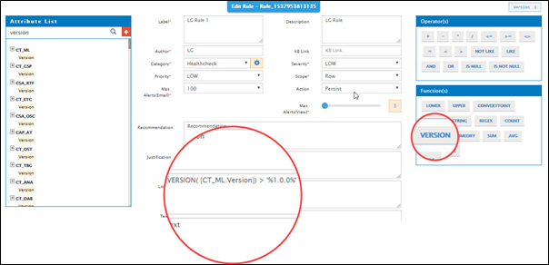
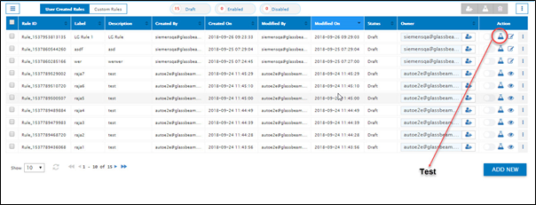
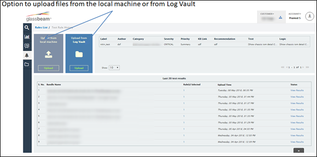

Support for setting rules based on Software Version
Why version support in Rules?
- When you create rules, you might want to set rules that don’t trigger on all the log bundles, but only for those that are lesser than, equal to or greater than a specific version.
- Software versions are not easy to compare as they are typically represented in ‘dot’ notation (M.N.X.Y for example)
- You can now use the version function to evaluate rules only for log files belonging to specific versions.

- Click the Test Rules button to initiate the testing of the rules against a log bundle / file.
If you choose not to test the rule, then you can exit the Add New rule page and return to the Rules List page. In the Rules List page, the rule you just created is displayed on top of the list, with the draft color code assigned to it. Before you can deploy this rule, test it against at least 1 log file or bundle. Until then the draft rule remains as is and cannot be enabled.

The Test Rule page has two options to test the rule that you just created.
- Upload logs from local machine ( your desktop) – use this option when the log that needs to be used for testing is not available in Log Vault
- Upload logs from LogVault – Use this option when the log(s) that needs to be used for testing is already available in Glassbeam’s LogVault

Created with the Personal Edition of HelpNDoc: Benefits of a Help Authoring Tool